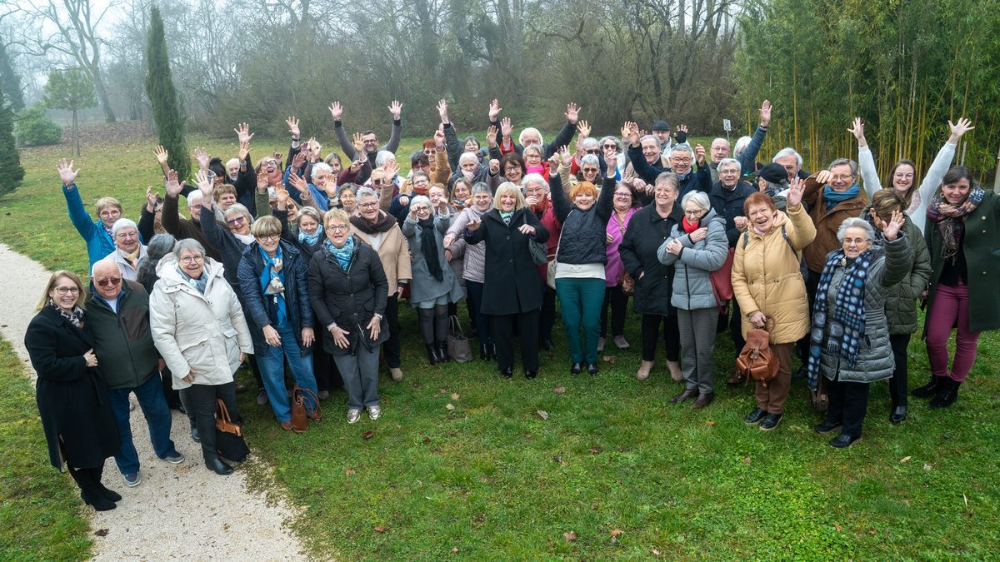
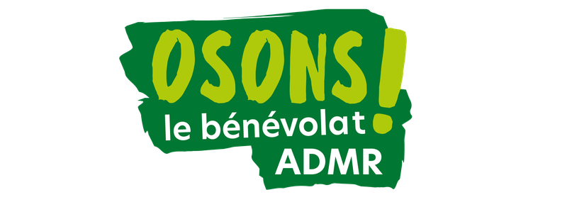
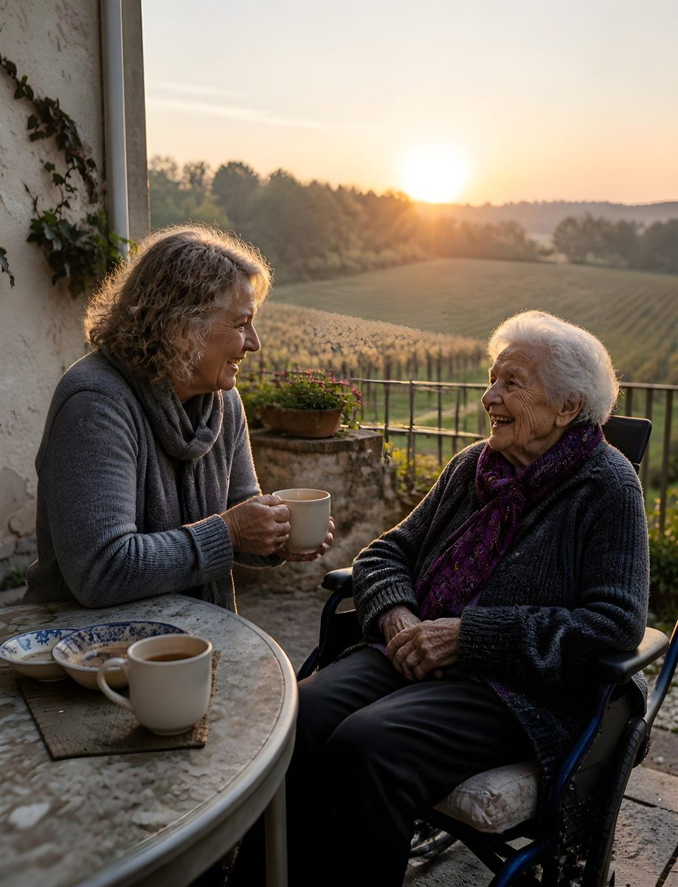
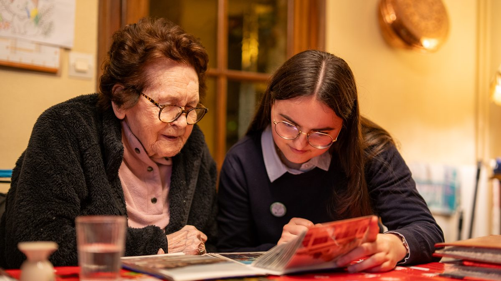
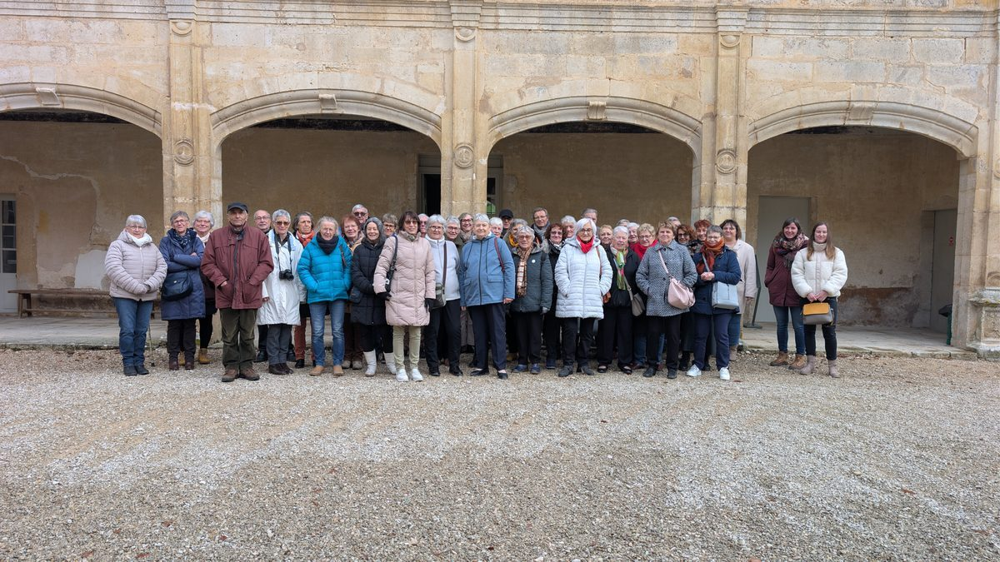
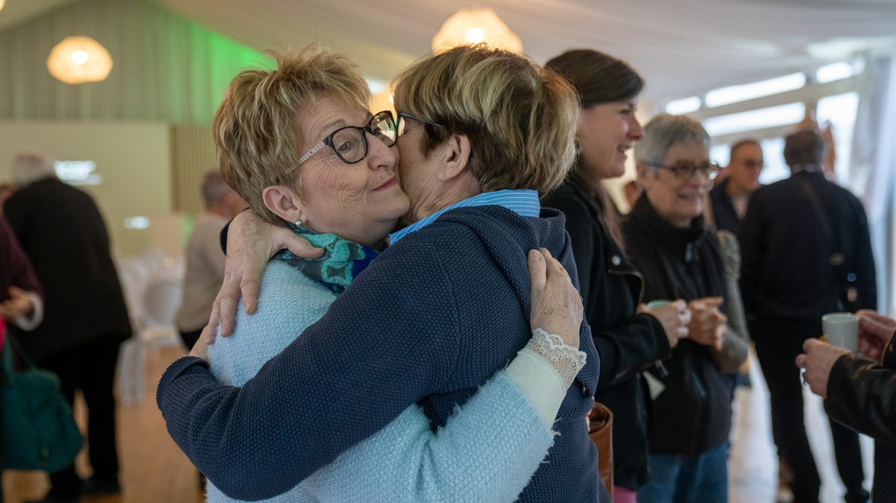
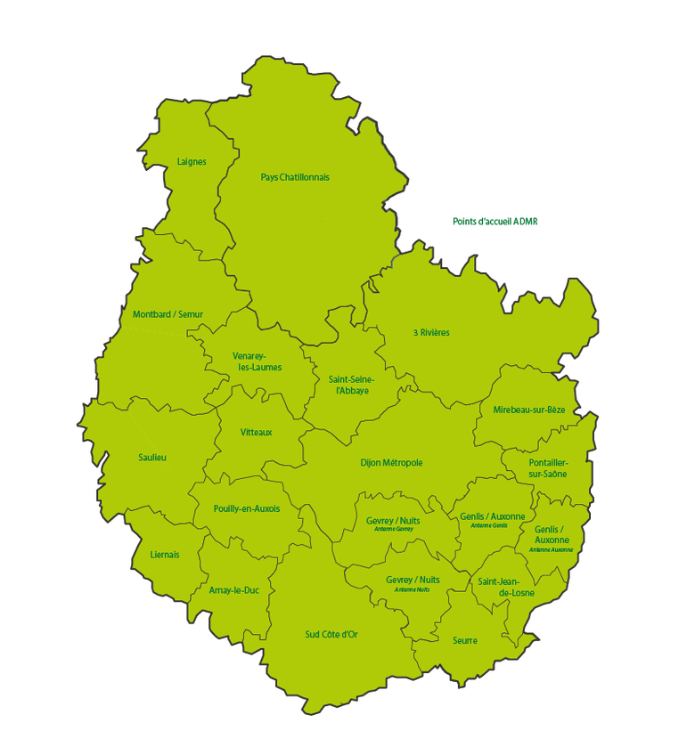

Arnay-le-Duc
ADMR Arnay le Duc
7 rue Président Carnot
03 80 84 87 39Référente bénévolat : Christelle06 30 90 53 10


Donnez du sens à votre temps libre
Depuis 1945, l'ADMR, à travers son bénévolat, fait vivre une belle idée : partager un peu de son temps, de son expérience et de ses compétences pour enrichir la vie des autres… et la sienne.
En Côte-d'Or, 215 bénévoles tissent du lien au plus près du terrain et font vivre la solidarité dans nos communes.
01Pourquoi
Empathie, bienveillance, savoir-faire et bonne volonté : chacun apporte ce qu'il est !
Prendre soin des autres, de son territoire…
En rejoignant l'ADMR, vous choisissez de vous engager pour une cause utile et proche de chez vous. Chaque action menée, chaque projet soutenu, chaque rencontre contribue à améliorer la qualité de vie des habitants de votre commune et à faire vivre la solidarité au cœur de nos territoires ruraux et urbains.
Prendre soin des autres, c'est permettre aux personnes accompagnées de continuer à vivre chez elles et de rester pleinement intégrées dans la vie locale. Prendre soin de son territoire, c'est préserver des services essentiels, renforcer le lien social, participer au dynamisme de la vie associative et contribuer à la création d'emplois locaux.

Une bonne action aussi pour soi !
Parce que l'engagement est une aventure humaine avant tout, être bénévole à l'ADMR, c'est aussi prendre soin de soi ! C'est se sentir utile, développer de nouvelles compétences, faire de belles rencontres, partager ses expériences et s'épanouir dans un collectif porteur de sens.
Le bénévolat à l'ADMR est bien plus qu'un simple engagement : c'est une action concrète au service des autres et du bien commun. En donnant de son temps, on reçoit aussi beaucoup : en sourires et en mercis qui valent mille mots !

En résumé, être bénévole à l'ADMR c'est
au service des autres et de son territoire, au sein d'un collectif porteur de sens.
et faire vivre la solidarité au cœur de nos territoires ruraux et urbains.
développer des compétences, faire de belles rencontres, partager ses expériences et s'épanouir !
accessible à tous, sans condition de diplôme ou d'expérience : à son rythme, chacun donne le temps qu'il souhaite.
02Les rôles
Les bénévoles de l'ADMR remplissent des missions diversifiées. Ils peuvent être membres du bureau (président, trésorier, secrétaire) ou encore référent salarié ou vie associative, pour contribuer à la gestion administrative et à la coordination des équipes. Certains s'impliquent également dans l'accompagnement des bénéficiaires (visites à domicile, installation de téléalarmes, animations…).
Cet engagement repose avant tout sur des valeurs humaines fortes : la proximité, le respect, la solidarité. L'action des bénévoles a un impact direct sur la qualité des services proposés par l'ADMR. En assurant une gestion de proximité, ils adaptent les actions aux besoins spécifiques des territoires et des populations. Leur présence garantit également une écoute attentive des bénéficiaires et de leurs familles.

Au cœur de l'humain
Au cœur de l'association
Au cœur de l'accompagnement
03Pour tous
Sans diplôme, sans expérience : seule compte la motivation.
Le bénévolat à l'ADMR est accessible à tous : seule compte la motivation à s'engager pour les autres et pour son territoire.
La fédération accompagne les bénévoles dans leurs missions. Un parcours d'intégration et des formations sont proposés tout au long de l'année. Des ateliers de réflexion collective et des événements inter-associatifs réunissent les différentes associations pour fédérer les équipes et partager leurs expériences. Ces temps forts favorisent la convivialité, la cohésion d'équipe et l'enrichissement mutuel.
Au sein des associations, des binômes sont proposés avec des bénévoles aguerris, ou des immersions au sein d'autres associations.

Témoignages
« Être bénévole à l'ADMR, c'est prendre soin des autres et de son territoire ! C'est permettre aux personnes âgées ou fragilisées de continuer à vivre chez elles et à rester intégrées dans la vie locale. J'aime contribuer au maintien du lien social et participer à des actions qui ont un impact concret sur la vie des personnes accompagnées. Donner un peu de son temps, c'est parfois apporter beaucoup à quelqu'un. C'est tout le sens de mon engagement à l'ADMR ! »
« Être bénévole à l'ADMR, c'est une expérience humaine riche et pleine de sens ! Pour moi, l'engagement associatif est avant tout une aventure humaine. Être bénévole à l'ADMR, c'est donc aussi prendre soin de soi ! Je me sens utile, j'acquiers de nouvelles compétences et surtout je fais de belles rencontres. C'est très épanouissant ! »
« Être bénévole à l'ADMR, c'est offrir bien plus que quelques heures de son emploi du temps. C'est créer du lien, partager des moments précieux et recevoir en retour des sourires qui illuminent la journée. Le bénévolat m'a appris que la solidarité et la bienveillance sont des cadeaux précieux, autant pour celui qui donne que pour celui qui reçoit ! »
« Être bénévole à l'ADMR, c'est faire vivre les valeurs de solidarité et de proximité. Je suis fier de contribuer, à mon échelle, au bien-être des personnes accompagnées et de partager avec elles des moments de convivialité. Chaque rencontre est enrichissante et me rappelle l'importance de la solidarité sur notre territoire ! Une expérience que je recommande à toutes les personnes souhaitant s'engager au service des autres. »
04Près de chez vous
Découvrez les missions de bénévolat à pourvoir et proposez votre aide en quelques clics.

Vos référentes vie associative
Elles vous présentent les missions, vous mettent en relation avec l'association la plus proche et vous accompagnent dans vos premiers pas.
Nos points d'accueil
Tapez votre commune : on vous indique l'antenne et la référente de votre secteur.
ADMR Arnay le Duc
7 rue Président Carnot
03 80 84 87 39Référente bénévolat : Christelle06 30 90 53 10
ADMR Genlis/Auxonne
60 rue Masson
03 80 65 53 34Référente bénévolat : Marine06 84 05 89 03
ADMR Sud Côte d'Or
2b Avenue Roger Duchet
03 80 26 37 10Référente bénévolat : Christelle06 30 90 53 10
ADMR Pays Chatillonnais
2 rue de la Libération
03 80 91 09 16Référente bénévolat : Alexandra06 24 20 33 92
ADMR Dijon métropole
60F avenue du 14 juillet
03 80 51 69 81Référente bénévolat : Alexandra06 24 20 33 92
Référente bénévolat : Marine06 84 05 89 03
ADMR Genlis/Auxonne
4 bis rue de la Gare
03 80 47 95 36Référente bénévolat : Marine06 84 05 89 03
ADMR Gevrey/Nuits
10 rue de Lattre de Tassigny
03 80 39 75 82Référente bénévolat : Marine06 84 05 89 03
ADMR 3 Rivières
16 place Général Leclerc
03 80 85 51 12Référente bénévolat : Marine06 84 05 89 03
ADMR Laignes
Grande Rue
03 80 81 48 73Référente bénévolat : Alexandra06 24 20 33 92
ADMR Liernais
Place Martin dosse
03 80 84 49 56Référente bénévolat : Christelle06 30 90 53 10
ADMR Mirebeau sur Bèze
8 Place Général Viard
03 80 36 57 74Référente bénévolat : Marine06 84 05 89 03
ADMR Montbard/Semur
3 bis Rue carnot
03 80 96 33 70Référente bénévolat : Alexandra06 24 20 33 92
ADMR Gevrey/Nuits
3 rue Jean Moulin
03 80 61 37 30Référente bénévolat : Marine06 84 05 89 03
ADMR Pontailler sur Saône
1 rue du 8 mai 1945
03 80 36 19 76Référente bénévolat : Marine06 84 05 89 03
ADMR Pouilly en Auxois
place Pierre et Marie Curie
03 80 90 64 76Référente bénévolat : Christelle06 30 90 53 10
ADMR St Jean de Losne
19 allée du Bastion des Charmilles
03 80 29 01 43Référente bénévolat : Marine06 84 05 89 03
ADMR St Seine l'Abbaye
24 rue Carnot
03 80 35 12 19Référente bénévolat : Alexandra06 24 20 33 92
ADMR Saulieu
3 rue du Tour des Fossés
03 80 64 21 68Référente bénévolat : Christelle06 30 90 53 10
ADMR Montbard/Semur
2ter Avenue de Ciney
03 80 91 58 22Référente bénévolat : Alexandra06 24 20 33 92
ADMR Seurre
22 rue du faubourg Saint-Georges
03 80 20 49 58Référente bénévolat : Marine06 84 05 89 03
ADMR Venarey les Laumes
5 avenue Jean Jaurès
03 80 89 17 93Référente bénévolat : Alexandra06 24 20 33 92
ADMR Vitteaux
21 rue Edmé Millot
03 80 49 69 80Référente bénévolat : Alexandra06 24 20 33 92
Nous ne trouvons pas cette commune dans notre liste. Vérifiez l'orthographe, essayez votre code postal, ou laissez-nous vos coordonnées.
Et maintenant ?
L'ADMR a besoin de femmes et d'hommes engagés qui souhaitent agir concrètement pour leur territoire.
Rejoindre l'ADMR, c'est donner un peu de son temps pour les autres, contribuer à l'avenir de son territoire et vivre une expérience humaine profondément enrichissante.
Parce qu'en prenant soin des autres et de son territoire, on prend aussi soin de soi !
Une envie de vous engager ou une question ? Une référente vie associative vous recontacte.
Ou directement : vieassociative@admr21.fr · 06 84 05 89 03
Et après ?